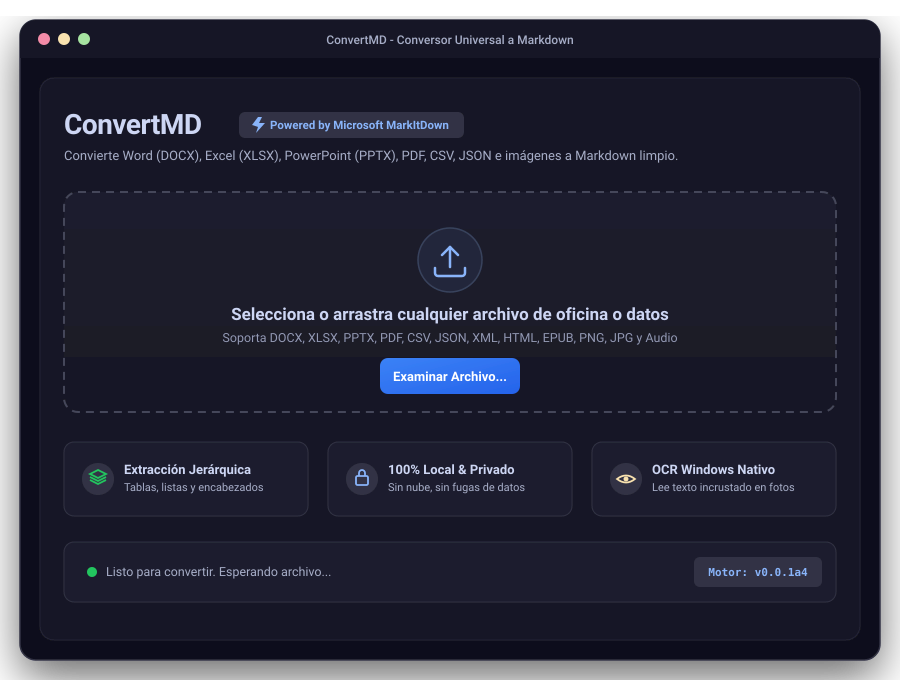

El Conversor Universal de Documentos a Markdown para IA
Transforma Word, Excel, PowerPoint, PDF, CSV, JSON e imágenes con OCR en formato Markdown limpio, estructurado y optimizado para LLMs y sistemas RAG. Aplicación nativa y portable para Windows.
Experimenta la Conversión en Tiempo Real
Observa cómo ConvertMD transforma datos tabulares, documentos enriquecidos y código en Markdown listo para tus agentes de Inteligencia Artificial.
Capturas Reales de la Aplicación
Diseñada en CustomTkinter con estética moderna, tema oscuro refinado y procesamiento asíncrono para que la interfaz nunca se bloquee.

Matriz de Formatos Soportados
Cualquier documento de oficina, base de datos o archivo multimedia se unifica bajo el estándar Markdown.
Documentos Office
Preserva tablas, formatos en negrita, jerarquías de títulos y listas ordenadas.
Lectura y Textos
Extracción limpia de texto, encabezados y capítulos sin saltos de línea rotos.
Datos Estructurados
Transformación a tablas legibles para LLMs o bloques de código semánticos.
Cuadernos y Archivos
Extracción de celdas de Jupyter Notebooks y descompresión de archivos zip.
Multimedia y OCR
OCR integrado de Windows para fotos/capturas y extracción de metadatos de audio.
Elige tu Formato de Entrega
Binarios compilados y optimizados para Windows x64. Elige entre la versión portable sin instalación o el instalador tradicional.
ConvertMD Portable
No requiere instalación ni permisos de administrador. Cópialo a un pendrive USB o ejecútalo directamente con un doble clic.
ConvertMD Setup
Asistente de instalación estándar para Windows con creación de accesos directos en el Menú Inicio, Escritorio y desinstalador limpio.
Código Abierto y Ejecución Local
ConvertMD es 100% Open Source. Puedes auditar el código, clonarlo, personalizarlo o compilar tus propios ejecutables.